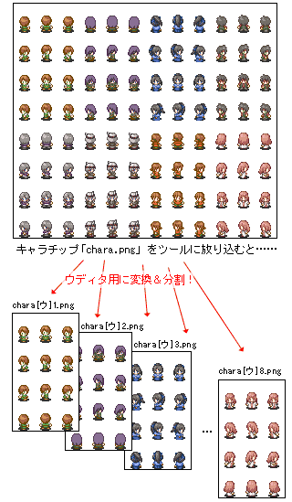
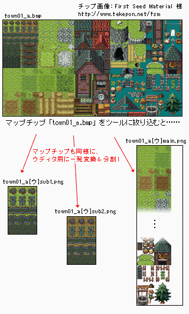

シルバーセカンド開発日誌
■
2008-05-31 (土) ウディタLvアップ！(予定)▼
すうさんから、MIDI機能充実なDLLの情報を教えてもらったおかげで、
MIDI音源のループの仕様や再生の安定性が、
RPGツクールXP用まで向上できそうなことが判明しました。
探せば便利なのも転がってるもんですね！
でも、そこにあるのに気付けない。
まるで都会から見た夜星のようです。
かーぜーのなーかーのすーばるー。おっとこれは地上の星。
何はともあれ、MIDI機能に関してはツクール並みになりそうなので
「ウディタのMIDI再生がヘボすぎるよーうわーん」
という人もこれで安心！
次回バージョナップをご期待下さいッ！！！！！！
ついでに、MIDI、OGGともに、再生中に音量を変更したり
テンポ/周波数を変更したりできるようにするつもりですので、
音声関連はかなりレベルアップできると思います。
最初からバッチリ行かないのは、もともとド素人同然の自分が
知識の習得と並行しつつ開発してるせいなのですが、
企業製品のように最初から完璧なものを作らなくてもいいのは
アマチュア世界の利点でもあるよなあ、と思ってます。
おかげでフットワークが軽い軽い。
ただインターフェースを自分好み仕様で作ってしまったので
その辺りが一般向けになってないことだけが残念。
モノリスフィアでバリバリ高評価が出せるくらい
マウス操作がうまい人は困らないんでしょうけれど。
それはそうと、育成シミュレーション系ゲームの事前研究を
前々から進めていたのですが、どんどん何が何だか
分からなくなってきました。
例えばときめきメモリアルGirl's Side 2nd Kiss（※公式見ただけ）。
主人公が女の子なのですが、システムが壮絶でした。
「事故チュー（誤字にあらず）」システムというのが搭載されていて、
物語の冒頭部分にて、事故で男子キャラと
チューしてしまうというシステムです。
で、もちろんその後の展開に影響が出てくるわけなんですが！
これ最初見たとき、エイプリルフールか何かかと思いました。
事故でチューなんかしないよ！ 何考えてんだよ！
シル学で女主人公編も作りたいなあ、と思いながら構想中の身としては
非常にフクザツな心境です、乙女の気持ちが分かりません。
こんなこと言ったらときメモGSファンの人に殴られそうですけれど。
何はともあれ、シル学は熱血友情ゲーにしよう、うん。
そう決心した一日でした。
以下は有志の方々によるシルフェイド幻想譚パッチなどのお話。 ▼追記を開く▼の前に、そのパッチ入れて久々にシル幻をプレイしたら、
自画自賛的ですがセリフにムダがなさすぎて笑いました。
これホントに自分が書いたのか疑問になります。
1文1文、1イベント1イベントごとに時間かけたもんなあ。
あと文字サイズの都合上、1文あたりの文字数が少ないので
読みやすく、テンポがよかったというのもあると思います。
当時は色んなことを無意識にやってましたが、
今になって見直すと参考になるところも多いですね。
新シルフェイド見聞録やシル学院も、いいところは維持して、
新しいところはより新鮮に作りたいものです。
＞シルフェイド総合版(サービス終了)にて、
＞シルフェイド幻想譚のハードモードを
＞さらに難しくしたパッチを作成させていただきました
すげえ！かしこまりました、ありがとうございます！
にしても、こういう試みは面白いですね、
もちろん自由に配布してくださって結構です。
ただし、宣伝・配布については自己責任でお願いします。
難易度がかなりキチキチにチューンされているパッチです、
ハードでもぬるーいという方にオススメ？
→ 2025/11/05: 掲示板がサービス終了で消えてしまっていたので
こちらにもパッチをバックアップさせていただきました。
作者様がまた別の公開場所をご用意してくださったら
うちからは消しますので！
『シルフェイド幻想譚ベリーハードモードパッチ』
●ベリーハードパッチのダウンロード(481KB)
シルフェイド幻想譚のDL版ファイルに上書きして使用します。
システムなども当時のバージョンに書き換わるのでその点はご注意を。
＞（前回の記事をうけて）先輩いなくなっちゃうんですか！？
＞空気がなくなったら死んじゃう！
某先輩は先輩じゃなくなりますが、
別の形で出すと思いますのでご安心下さい。
そう、例えば空気みたいな存在として。
＞ウルフさんのお勧めのSF小説は何ですか？
最近記憶にある中では、「エンダーのゲーム」という小説が
面白かったです。約540ページ。
現代に読むとあんまり超科学してない内容なのですが、
1987年発行ということを考えるとすごく先見の明があると思います。
（例えば、劇中に匿名フォーラムで自作自演するネタがあったり！
ネットもまともにない時代なのに早いよ！）
主人公君の、天才ながらも時に容赦のない優しい性格が大好きです。
でもそんな自分の目指すところは、
「天才ではなくても努力家である」こと。
今のご時世、汚いことや悲しいことも多いですけれど、
真っ向から頑張り続けることで割とうまく行くんだよということを、
多くの人が思い出してくれたら嬉しいなと思っています。
叶わないきれい事だとおっしゃるかもしれませんが、
清く正しく頑張って成功する人が少しでも増えることで、
真面目に生きてる人は、もっと勇気を持てるようになるはずです。
自分は、誰かの目標になれるくらいの存在になりたいと、そう願います。
いざ目指すと大変なんでしょうけれどね。 ■
2008-03-26 (水) ウディタのレビュー来ました▼システムを自由に拡張できる
フリーのRPG作成ソフト「WOLF RPGエディター」
http://www.forest.impress.co.jp/article/2008/03/25/wolfrpgeditor.html
（窓の杜/インターネットアーカイブへ）
窓の杜さんが何の前触れもなくWOLF RPGエディターを
紹介してくださってて、目玉がぶっ飛びました。
あと六花さんのtkool2WOLFも同時紹介。
こんな便利ツールを作ってくださってありがたやありがたや。
記事の内容は、ウディタがどんなものか知らない方には
ちょうどいい内容になっていると思います。
特に嘘もないですし、誉めすぎというところもない辺りが
プロの記事ですね！
ただ「改造して独自のメニューを追加したり、完全にオリジナルの
システムを1から作成することも可能だ」と書いてありますが、
ユーザーさんの能力にもよりますけれど「可能」というのは
「簡単」という意味ではありませんのでご注意を！
でも、最近の若い子は早い内からPC関連技術やらプログラムを
習ってたりするそうですので、これからは、複雑な処理が要求されても
結構あっさり作っちゃえる人が増えるのかもしれませんね。
そもそも全員がプログラムでゲーム作れるようになったら
ウディタ要らないなあ。
あと、ウディタコンテストを開催しようかなーと思って
参考に3分ゲーコンテストのサイトを見に行ったら、
どんどんハードルの高さにやる気がなくなってきたので、
とりあえず代替策としてウディタ公式ページに
WOLF RPGエディター作品登録ページを作っておきました。
スクリーンショット貼り付け可能で、
コメントを受け付けられる登録ページです。
コンテストは何というかもう……いいや。
作業量的には問題ないと思ったのですが、精神的にとても大変そうです。
コンテストの代わりといっては何ですが、
WOLF RPGエディター公式の作品登録ページに、
「これは光ってる！」という感じの作品が登録されていた場合は、
レビューを執筆させていただきたいなあと
考えておりますので、それでご勘弁を。
コンテストでもレビューでも、
形はどうあれ良い作品は紹介したいと思いますし、
それをたくさんの人に知ってもらいたいと思う気持ちも変わりません。
※3分ゲーコンテスト(インターネットアーカイブへ)って？
ツクール新聞(インターネットアーカイブへ)を執筆なさっていた
トモタカさんという方が主催しておられたゲームコンテスト。
その名の通り3分っぽいゲームを評価するコンテストです。
ですが色々問題が発生してしまったようで、現在休業中です。 ■
2008-03-15 (土) ウディタ正式版公開！▼
WOLF RPGエディター正式版、ついに公開しました！
更新情報は公式サイトの方に掲載しておりますので
こちらをご参照下さい。
WOLF RPGエディター公式サイト
http://www.silversecond.com/WolfRPGEditor/
今後の更新情報などは全てこちらに載せていく予定です。
ウディラー（今考えたけど語感がおかしすぎる）の人は
見逃すなっ！です。
今回の更新で何が一番いいって、
暗号化がとうとう実装されたことです！
フォルダ単位の暗号化、またはまるまる全部暗号化が可能で、
ツクー●みたいに音楽だけ圧縮できないとか、
そんなこともありません！
（というかツクー●がなぜ音声だけ圧縮できないのか謎です。
権利やら何やらの、技術以外の問題がありそうな気がします）
また今回の実装内容には、RPGツクールV×のWikiから
発想を借用させていただいたものがあります。「接触範囲拡張」です。
というか、接触範囲拡張を思いついた人スゲェ！地味に便利です！
次期ツクールがあるなら是非入れていただきたいと思います。
この「接触範囲拡張」は、イベントが起動する範囲を
本来の1マス×1マスより広くすることで、
たくさんイベントを並べないと実現できない処理を
一個のイベントで実現できるという優れものです。
ランダムエンカウントや、街の入口などに利用しています。
それと、デフォルトシステム搭載も今回の更新の目玉です！
なんだかちょっとバグ込みの予感なので、その点だけ留意してください。
何か見つかったらコモンイベント配布で修正しようと思っています。
また、ウディタをダウンロードするのが面倒臭い人用に、
ムービーを撮影して現在アップロード中です。
いやー、動くものがすぐ見られるって便利ですねYoutube！ニコニコ！先週からずっとウディタのバグと格闘しています。
開発者本人はマップ機能なんて全然使わないのに
マップ周りでいっぱいバグが出てウキャー！！
でもVer1.00で大々的に正式っぷりをアピールしたいので
がんばって直しています。

開発中のデフォルトシステム、装備画面です。
デフォルトシステムでは、設定によっては
防具欄の3番目と4番目に同じ装備を付けられたり、
武器を防具欄にも装備させることができます。
全身にロングソードを装備して
5回攻撃なんていうおバカなこともできますし
アクセサリ欄を2つ作って色々組み合わせたりもできます。
このデフォルトシステム同梱版は、
ウディタの基本的な使い方さえ分かれば
データベースの設定とコモンイベント呼び出しだけで
基本的なRPGを作ることができる予定です。
少なくとも、自作システムを作ろうとして挫折した人には
十分扱えるレベルにするつもりですので、ご期待下さい。
そのうちウディタのコンテストみたいなのも
やりたいなあ、と思ってますが、作品が来なくて「……」となる可能性が
極めて高いので微妙な状況です。
3分ゲーコンテストやコンパクみたいに使用ツールが何でもOKなら、
それなりに集まるんでしょうけれど……。
ついでに言うと、コンテストを開くにあたっては
審査方法が難しいところです。
審査員だけが評価を付けるのか、一般投票も有りなのか。
なんだかんだ言ってどちらも揉めますから、
可能な限り公平に評価できるシステムが欲しいと思っています。
一般投票をすると既存のファンが多い方が強すぎますし、
審査員だけの評価だと割と好みだけでケリが付いてしまいますし。
シナリオのように、主観的な評価で左右される部分は多人数の平均で、
独創性やインターフェース・ゲームシステムなどの、
比較的客観的な評価が要求される部分は
信頼できる少数で評価すればいいのかなあ、うーん。
研究でも思いますが、数値で表されないモノの価値を
数値として客観的に評価するのは、とても難しいことです。
特に、評価するモノが人間の感性に影響するものなら、なおさらです。
時には、評価する手法そのものが
一つの研究として成り立つことほどです。
ゲームに点を付けるということは、凄く難しい。 ■
2008-02-21 (木) 時間が消し飛ぶー▼
WOLF RPGエディターなのでウルファールでいいやという安直な名前。
WOLF RPGエディターのマスコットキャラクター考えなきゃなあ、
なんてどうでもいいこと考えて落書きしてました。
どう考えても大衆向けじゃないツールに華は必要なのか！？
いや断じて否！もっと男気あふれるブツでありたい！
で、それはともかく、現在、WOLF RPGエディター改造中です。
ついでに「開発に慣れてない人向け計画」を進めるために
デフォルトシステムを作成しています！が、早くも苦戦気味です！
自作システム開発にはかなり慣れてるつもりなんですけれど、
それでもこれだけ苦労するということは、
普通の人にはWOLF RPGエディターなんて
意味不明間違いなしだと思いました。
今使ってくださっている方々には感謝の限りです！
（というか使ってくださっている人が
いるのかどうかわからｎゲフンゲフン！）
ちなみにこのデフォルトシステムは、RPGツクール2000より
高度なシステムが組めると豪語できるシロモノにする予定です。
で、そうやって色々作ってるとその度にバグがけっこう出るので
デバッグ作業もわりかしバッチリです。
シル見リメイクのためにも、少しでも作業効率アップができるツールに
仕上げていきたいと思っています。
なお、デフォルト戦闘システムの仕様はかなりマニアックです。
ベース部分はデフォのままでも、
ユーザさんのデータベース設定によっては
そう簡単には底が見えないゲームシステムにできる、というのが目標！
全部コモンイベントでできてるので、分かる人なら改造もできます。
>SmokingWOLFさんほどの人ならもう見聞録の
>ネタやストーリーも考えてるのでしょうか(ノ∀`)
おかげさまで最終話だけはシナリオ・演出共に
バッチリなほど思いついてます。ただ途中の話が思いつきません。
ついでに、細かいネタをシルノで使い切ったのでストックがありません！
話の概要なんてどうでもいいから面白い小話を！ハァハァ！
>モノリスフィアにリス君の出番があると知って安心しました。
ありません！！
>SmokingWOLFさんは腐のつく属性の方なのでしょうか。
サニーガールというフリゲ紹介サイトではシル見が
なぜかBLの項目にも入ってたとか恐ろしくて言えなかった
私ですので、腐ではありませんと主張します。
誤解を解くために、以後の幻想譚やシルノでは
ちゃんとウフフな話も織り交ぜるようにしていますから！■
2008-02-03 (日) ツール紹介「tkool2WOLF」▼いよいよモノリスフィア投稿直前という状況ですが、
先日、ウディタ用ツールを作ったよーというスゲェ
嬉しいご報告があったのでここで紹介させていただきます。
「WOLF RPGエディターって素材ないし
素材の改変も面倒だし使う気起きな～い」
という方向けに待望のツール！その名も「tkool2WOLF」！
これはRPGツクール2000/2003用のキャラチップ・マップチップ素材を
WOLF RPGエディター用に一発変換してくれるという超便利なツールです。
[ツールの公開先]
http://sunsoften.web.fc2.com/(インターネットアーカイブ)
[tkool2WOLF+/六花 様]
このツールの機能を図解すると、それぞれ以下のようになります。
【キャラチップの場合】
ツールを起動してキャラチップをドラッグ＆ドロップすると、
以下のような分割方式で画像の切り分けを行ってくれます。
これでツクール2000用キャラ素材もすぐウディタで使えるように！

【マップチップの場合】
普通の人にはもっと面倒臭いと思われるマップチップの並び替え！
このツールはツクール2000/2003用マップチップの並び替えも
一発で行ってくれるという優れものです。海岸線マップもバッチリ！

※ただしツクールに同梱の画像は規約上使えませんのでご注意下さい。
FirstSeedMaterial様(インターネットアーカイブ)などで
配布されているツクール用素材はOKです。
このような素晴らしいツールを作ってくださった六花様には
深く感謝しております。誠にありがとうございました！ ■
2007-12-17 (月) 現状報告：新作＆ウディタ▼
落書き。新作モノリスフィアの主人公モノリス様。
最近開発と関係ないことばかり書いてる気がしますが
そっちの方が評判がいいらしいことに気付きました、
開発といっても作ってる最中のゲームは面白い部分のネタを
バラせないし、結局システム紹介にしかならないので、
そういう意味では既成の作品の裏側を振り返る方が
面白いと思います。書いてて楽しいですし。
今回は現状報告です。
コンパク応募予定の作品、モノリスフィアは
ステージそのものはたいがい完成して、
いよいよ終わりが見えてきたかな、
というところまで開発が進んでいます。
ゲームの難易度なんですが、ゲーム後半は作者でも
いちかばちかでないと最高ランククリアができない程度の
難易度になりつつあります。
マウスオンリーということは操作もアナログ的になるので
プレイの上手さが自分の健康状態に大きく左右されます。
もう少し最大難易度を簡単にするか、もしくはそのままで
救済措置を設けるか、どうしようか考え中です。
もっとも、コンティニューを繰り返すと
難易度が低下していくのはいつも通りなので
クリアできないということはないと思います。
もちろんノーコンティニュー特典もありますので
エキスパートの人もご安心を。
それとWOLF RPGエディターについてですが、
Ver1.0で暗号化機能を付属させて正式公開にしようと思っています。
全機能を無料で使えるようにすることを決定しましたので
データ暗号化も自由に使えるようになる予定です。
どうせライセンス制にしたって、RPGツクールVXが出た今では
もともと使う人少ない → ライセンス売れない →
使う人少ない → 結局無料化する → やっぱり使う人増えねえ！
という流れになることは火を見るより明らかなので、
いさぎよく全機能を解放することに決めました！
未練たらしくカンパ受け付けくらいするかもしれませんが
その辺りはどうか許してやってください。
最後にもう一つ、あと1週間で、
SilverSecond（このサイト）がとうとう9周年になります。
ここまでやってこられたのも、皆さんのおかげです、
いつも来てくださっている皆さまには感謝が尽きません！
これからもどうか暖かく見守ってくださると幸いです。
本当にありがとうございます！■
2007-11-27 (火) WOLFエディタVer0.955▼
マウス機能とDBのファイル入出力機能を追加！
初めての人、サンプルゲームを見たい人は↓をダウンロード！
WOLF RPGエディターα フルパッケージ(ver0.955) 2.5MB (公開終了)
（※サンプルにマウス射的ゲームが追加されています）
【Ver0.95→0.955(緊急修正)の更新内容】
・[変数操作]で下の2つのボックスにて、「X番の変数読込」が
正常に機能していなかったバグを修正
【Ver0.91→0.95の更新内容】
[新機能]
・マウス機能を追加しましたマウスのクリック状態やホイール状態は、
[変数操作+]の「その他」にて取得可能に。
マウスポインタの座標についてはシステム変数71番（X座標）と
72番（Y座標）で読み込むことが可能です。
・データベースのファイル入出力機能を追加。
多人数開発でパラメータを設定するときなどに便利です。
ファイル入出力できるのは
「タイプ設定」
「特定のタイプの設定＋全データ」
「データのみ（複数可）」
の3種類です。
[Editor.exeの修正]
・[サウンド]
「直接指定」の「（停止）」を指定した場合に、
修正時の表示が崩れるのを修正。
・[条件分岐（変数）]
「3変数を連動」の挙動を修正しました。
・[タイルセット設定]
一部環境でクリック座標がズレるエラーの修正（を試みました）。
[Game.exeの修正]
※今回は割と困るバグが多いのでアップデートを推奨します。
・イベントの出現条件をセルフ変数にしたとき、
全てイベント0のセルフ変数を
読みに行ってしまうバグがあったのを修正。
・マップ切り替え時にスクロールが停止するバグを今度こそ修正（たぶん）
・BGMとBGSの併用ができない＆タイトルに戻ると鳴らないバグを修正
・マップ番号0のマップでは条件付きのイベントが
自動実行できないバグ修正■
2007-11-08 (木) WOLFエディタVer0.91▼
WOLF RPGエディターVer0.91をアップしました。
初めての人、サンプルゲームを見たい人は↓をダウンロード！
WOLF RPGエディターα フルパッケージ(ver0.91) 2.5MB
すでに入れてある人、exe3つだけ上書きしたい人は↓から！
WOLF RPGエディターα exeのみ(ver0.91) 1.2MB
【Ver0.90→0.91の更新内容】
[Editor.exe]
・[総合]イベントウィンドウ等がその他アプリの上に出ないよう修正
・[イベントエディタ] 開いた直後にグラフィックが出ないバグを修正
・[その他1]入力済みの「トランジションの指定」と
「イベントの一時消去」が修正できないバグ修正
・[その他1]「キー入力チェック」のキーボードとパッドの
チェック状態が修正時に反映されないバグ修正
・[コモンイベント]Bキーによる修正ウィンドウ機能追加
・[マップエディタ]四角塗り潰し機能の境界線処理が
右または下方向に効果を及ぼさなかったのを修正
[Game.exe]
・タイトルに戻ってもBGMが残るバグを修正
・SEの（停止）が機能していなかったのを修正。
・BGSが鳴らなかったのを修正。
・ロード時に「文字列ピクチャ」の位置が「左上」に戻るバグを修正
・サンプルゲームのマップ移動時に
スクロールが停止するバグを修正（たぶん）。
・システム変数52～57に変数格納しようとするとエラーが出るバグを修正
もう2年もいじってたのに今までBGSが鳴らないことに
誰も気付いてませんでした！スゲェ！ダメな方向にスゲェ！
使わないのにロマンだけで入れた機能もだいぶあるので、
一部動かないものがあるかもしれません、
お気付きになられましたらご報告下さいますと助かります。■
2007-11-05 (月) WOLFエディター中改造▼WOLF RPGエディター最新版をアップしました。
初めての人、サンプルゲームを見たい人は↓をダウンロード！
WOLF RPGエディターα フルパッケージ(ver0.90) 2.5MB
すでに入れてある人、exe3つだけ上書きしたい人は↓から！
WOLF RPGエディターα exeのみ(ver0.90) 1.2MB
それと、Wikiは一部の有志の方がいじってくださるものの
やはり説明に関してはどうにもならないことが分かったので
一通りツールの説明書を作成しました。今後も追加・変更予定です。
『WOLF RPGエディター説明書』
Wikiでこれまで協力してくださった皆さま、
本当にありがとうございます。
Wikiは今後素材提供やプチ講座、コモンEv交換の場として
使えればいいなと思います。
【Ver080→0.90の変更点】
また結構な量の改造です。ゲーム配布に必要な
「ゲームデータの出力」機能とフォント周りの機能追加がメイン。
[新機能]
・[ゲームエンジン]
一部環境で、320x240解像度で
フルスクリーンにできなかったバグを修正。
また320x240でもフォントが綺麗になりました。
・[メインウィンドウ]
「ゲームデータの出力」機能を実装。
ゲームに必要なファイルだけ別フォルダに出力できます。
暗号化の欄もありますがこれらはライセンス機能専用です。
・[ゲーム基本設定]
使用フォントを4種類まで登録できるようになりました。
文字列中で￥font[?]と入力することで
部分的なフォント変更が可能です。
（※?＝数値。0なら基本フォント、1～3ならサブフォント1～3に変更）
ステータスの数値だけ変えたりすることができます。

・[フォント自動読み込み機能]
ttf形式やttc形式のフォントファイルを「Game.exeと同じフォルダ」
または「Dataフォルダ直下」に入れることで、
そのフォントファイルを自動で読み込むようにしました。
・[ゲーム基本設定]
ゲーム開始時の主人公キャラクター画像を設定できるようになりました。
・[新規マップ作成]
マップの新規作成と同時にシステムDBに登録できるようになりました。
・[条件分岐（文字列）]
既存の分岐「と同じ」「以外」に、新たに「を含む」を追加しました。
・[その他2]
「[変数]番のコモンイベントを呼び出す」機能を追加しました。
イベントの挿入コマンドの下の方に各変数が追加されています。
（変数に0以降の値を指定するとそのIDのマップイベント、
500000（50万）以降の値を指定すると
その番号のコモンイベントを読み込みます）
追記はバグ修正や調整内容です。 ▼追記を開く▼[Editor.exeの修正]
・[コモンイベント]
システム変数による起動条件を消去しました。
もともと処理速度の問題で、システム変数によるイベント起動は
常時チェックしないようにしていたのですが、
入力欄だけそのまま残っていたためです。
・[イベント・コモンイベント]
イベントコマンド欄の横スクロールができるようになりました。
・[データベース]
各種DB間のタイプ、データのコピーが可能になりました。
・「変数操作」
格納先の変数も読み込む変数も両方文字列変数なら、
文字列の格納ができるようにしました。
・[変数操作＋]
イベントコマンドの修正時、右上の演算子が＝に戻ってしまうバグ、
および、各種チェックがキャンセルされてしまうバグを修正
・[その他1 キー入力]
コモンイベント入力時だけキーボード入力と
パッド入力が使用できないバグ修正
・[その他1 キー入力]
通常変数を指定すると表示がおかしくなるバグ修正
・[その他2 イベントの挿入]
存在しないイベントを読み込んだ場合にエラーが起きるのを修正。
[Game.exeの修正]
・マップの範囲外に「場所移動」しようとするとエラー文が出るようにしました。
・文字列のキーボード入力時、￥を入れるとフリーズするバグを修正
・変数操作の計算結果が±約22億（int型の限界値）を越えると
変数がおかしな値になってしまうバグを修正、
なお計算結果の値の最大値は現在±20億となっています。
・トランジションが最初の一回しか機能しないバグを修正
・お手軽ウィンドウ機能のピクチャがロード後正常に表示されないバグ修正
・ループ周りのバグを修正
・フラッシュの処理がおかしかったのを修正
Copyright © SmokingWOLF / Silver Second
 カテゴリ: ウディタ
カテゴリ: ウディタ カテゴリ: ウディタ
カテゴリ: ウディタ